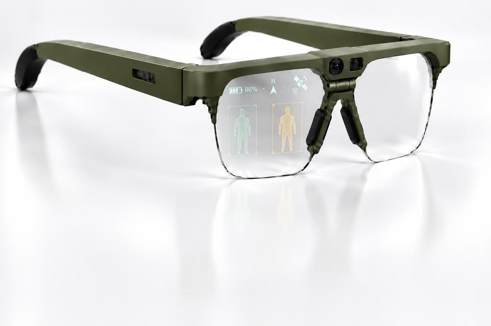
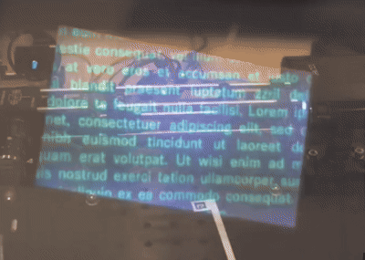
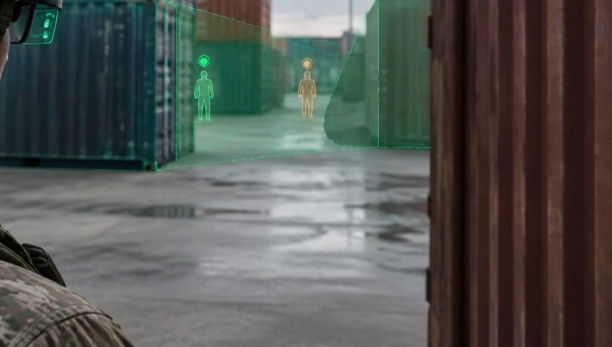

Situational awareness
Present relevant information in the wearer’s field of view.


See more, know more, act faster.
Modular AI-enabled smart glasses
Designed to support situational awareness and real-time communication.
Explore the platformAbout
HOLOBILIG is developing a modular AI smart-glasses platform for consumer and defence applications. We combine optical engineering, computer-generated holography, sensing, and AI-enabled information systems to make useful information more accessible through wearable displays.

Vision
HOLOBILIG brings optical display, sensing, audio, and computing together in a modular wearable platform. The system is designed to deliver relevant information while keeping the wearer focused on the environment.
Present relevant information in the wearer’s field of view.
Support real-time communication between users and command centers.
Configure sensing, audio, optics, and computing around user needs.


Technology
The optical architecture combines an RGB laser-diode light engine with a spatial light modulator (SLM) microdisplay. Light is coupled into a waveguide integrated with the lens, directing the image toward the wearer’s eye.
Careers
We welcome people who want to work across optics, semiconductor light sources, embedded systems, AI, product design, and scalable manufacturing.
Contact
Contact HOLOBILIG for general questions, partnerships, or information about the platform.
info@holobilig.com